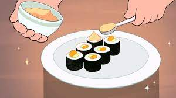

Snack Sushi

"A great dish to make if you're going to have friends over who don't like the taste of raw fish"
From Lion and Steven Universe on an educational video on their show, "Cooking with Lion".
Steven visually demonstrates the steps into creating the recipe and talks as Lion by audibly giving the instructions. This continues until the recipe is finished.
Ingredients
- 1 Avocado
- Mayonnaise
- Hot sauce
- Sushi rice
- 2 sheets of Nori
- 1 bag of smooth cheese puffs
Steps
- Use a spoon to cut vertical slices into the avocado. Run the spoon along the inside of the skin and transfer the cut slices to a plate.
- In a bowl, combine the mayonnaise and chosen hot sauce and mix them together into its own taste.
- On a bamboo rolling mat, place a sheet of seaweed paper rough-side up and, using a paddle or spatula, spread the sushi rice onto the seaweed paper.
- Line up the avocado slices from earlier onto the sushi rice.
- Cheese puffs. Same as step 4, line them up along the sushi rice with the avocado slices.
- Use the bamboo mat to roll the sushi roll into a cylinder shape.
- Cut the roll into six equally sized pieces so it can be consumed in one bite easily.
- Dip the mixed sauce from earlier onto the top of each piece of sushi and garnish the plate with its own independent sauce for artistry.
Back to main page